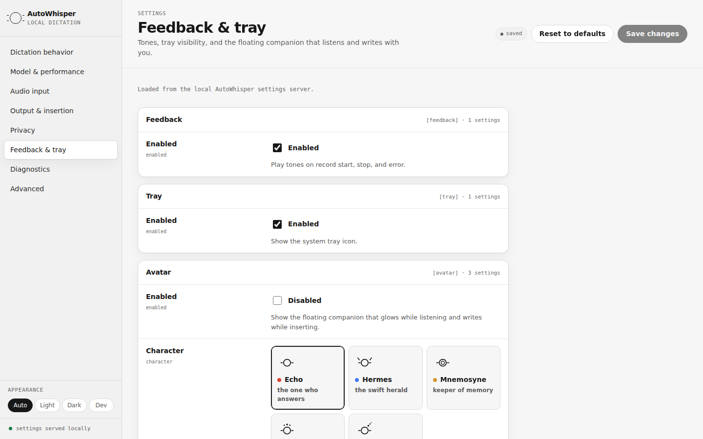

Speak.
It types.
Hold a key and talk. AutoWhisper turns speech into text at your cursor — offline, local-first, open source.
v0.7.1 · AutoWhisper-macOS-v0.7.1.zip · Notarized Developer ID

Real product UI — the settings app AutoWhisper serves locally.
Offline by design
Whisper models run on your hardware. Speech never leaves the machine.
Built for flow
Push to talk, release, keep working. Text lands wherever your cursor is.
Open source
Apache-2.0, native C++, auditable end to end on GitHub.
A companion, if you want one.
Echo is an opt-in floating spirit that glows while you speak and visibly writes as your words land. Click it to dictate without a hotkey. Five characters ship — Echo, Hermes, Mnemosyne, Kalliope, and Morpheus — each with its own silhouette and tempo.

Real product UI — the character picker in Feedback & tray.
Mobile is next.
Design previews for iOS, Android, and watchOS — not yet shipping. The same rule everywhere: your voice is processed on your devices.


Download for your desktop.
Linux x86_64
Where AutoWhisper started. Self-contained binary, X11.
autowhisper-0.9.0-linux-x86_64.tar.gzWindows x86_64
Self-contained exe, no installer. Beta — feedback welcome.
autowhisper-0.9.0-windows-x86_64.zipUbuntu, via the PPA
sudo add-apt-repository ppa:primemanifold/autowhisper
sudo apt update
sudo apt install autowhisperFAQ
Does my voice ever leave my machine?
No. Transcription runs locally through whisper.cpp on your hardware. The current build has no telemetry and no cloud endpoints — the settings app exposes every configurable key, so you can check.
Which platforms are supported?
Linux (X11) is where AutoWhisper is most mature. macOS ships as a signed, notarized app. Windows is in beta as a self-contained exe. The mobile and watch screens above are design previews, not yet shipping.
Where do the speech models come from?
On first run AutoWhisper downloads a local Whisper model — you pick the size in settings; smaller is faster, larger is more accurate. After that, dictation works fully offline.
What is the floating companion?
An opt-in floating button with a personality: it glows while listening, a mote orbits while it thinks, and it visibly writes as text lands. Click it to start or stop dictation without a hotkey. Choose between five characters in settings, or keep it disabled — it is off by default.
Does it work on Wayland?
Not yet — Linux support is X11 today. The settings app's Diagnostics pane reports honestly what your build can and cannot do on your desktop.
How do I change the hotkey or the model?
Open Settings from the tray icon. AutoWhisper serves a small local settings app in your browser — light, dark, and a phosphor-green dev theme included. Edits are validated and written to your config.toml.
Found a bug? Want a feature?
Requests and reports live on GitHub. Use a template directly, or let Claude interview you, check for duplicates, draft the issue to the repo's template, and file it — then help you star the repo and follow releases while you're there.
Your microphone audio stays local.
Offline transcription, local configuration, transparent releases. Everything is at github.com/primemanifold/autowhisper.